"Linea di Partenza 1925"
La Formula 1 affonda le sue radici nelle corse automobilistiche di fine Ottocento, che incominciarono ad assumere
lo status di Gran Premi dal 1906. Negli anni Venti del Novecento ci fu la prima seria
regolamentazione delle gare, denominata "Formula Grand Prix", e fu adottata principalmente in Europa.
Questo regolamento fu alla base di tre edizioni di un Campionato Mondiale per Costruttori
(vinto dall'Alfa Romeo nel 1925, dalla Bugatti nel 1926 e dalla Delage nel 1927), di due edizioni di un "Campionato Internazionale"
(nel 1931 vittoria di Minoia su Alfa, e nel 1932 vittoria di Tazio Nuvolari su Alfa Romeo) e delle cinque edizioni di un "Campionato Europeo Grand Prix"
(dal 1935 al 1939) dominato da piloti e vetture tedesche.
"Linea di Partenza 1925"
Dopo la comparsa nel 1970 della rivoluzionaria Lotus 72 e nel 1978 dell'altrettanto strabiliante Lotus 79,
nulla fu più come prima: le auto di Formula 1 cambiarono completamente volto e nell'arco di dieci anni vennero
totalmente trasformate. Ingegneri, tecnici aerodinamici e costruttori di pneumatici impressero all'automobilismo una vorticosa evoluzione che
contrassegnò tutto il decennio.
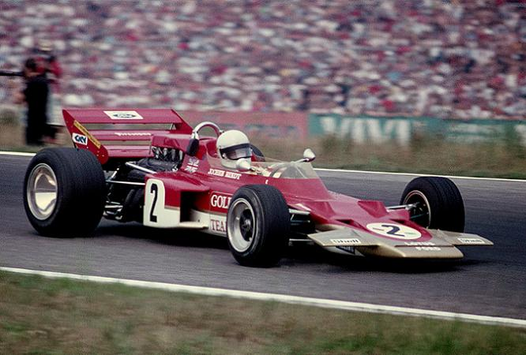
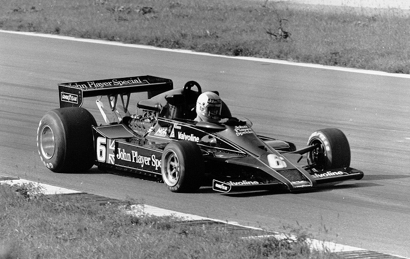
Nel 1970 il mondiale venne assegnato “alla memoria” a Jochen Rindt, morto proprio alla guida della Lotus 72, nelle prove del Gran Premio d'Italia.
Nella battaglia per la sicurezza si schierò in prima fila lo scozzese Jackie Stewart, grazie al quale vennero adottati
progressivamente le tute ignifughe, le cinture di sicurezza e il casco integrale. Tutti dispositivi che fino ad allora erano rimasti sconosciuti e che
salvarono la vita a Niki Lauda al Nürburgring nel 1976.
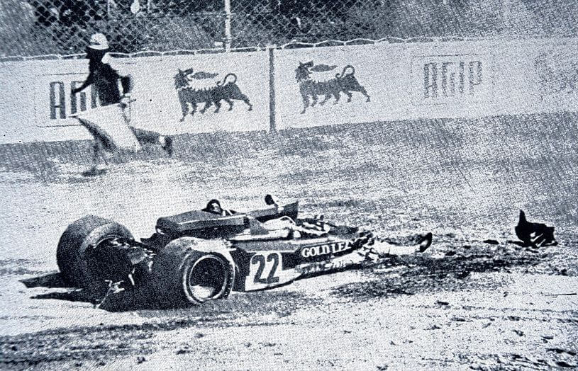
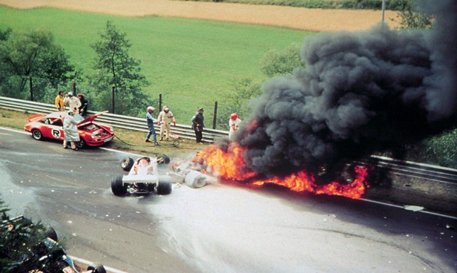
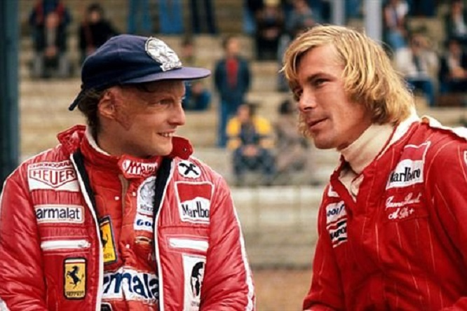
Fittipaldi vinse i mondiali del 1972 e 1974, James Hunt quello del 1976 e Alan Jones con l'emergente Williams quello del 1980.
Ma il pilota che più contrassegnò la seconda metà del decennio fu indubbiamente l'austriaco Niki Lauda. Il "baricentro"
della Formula 1 continuava a essere fortemente europeo, nonostante le sporadiche incursioni di team statunitensi quali la Eagle negli anni
Sessanta o la Shadow, la Penske e la Parnelli negli anni Settanta. Tutte squadre abituate a dominare i campionati americani, ma che in Formula 1 totalizzarono
appena tre vittorie. Maggior fortuna ebbero i piloti e Mario Andretti (nato in Istria e poi emigrato in America) vinse il mondiale del 1978; seguito nel 1979
dal sudafricano Jody Scheckter, che nel 1977 aveva ottenuto tre vittorie alla guida della canadese Wolf.
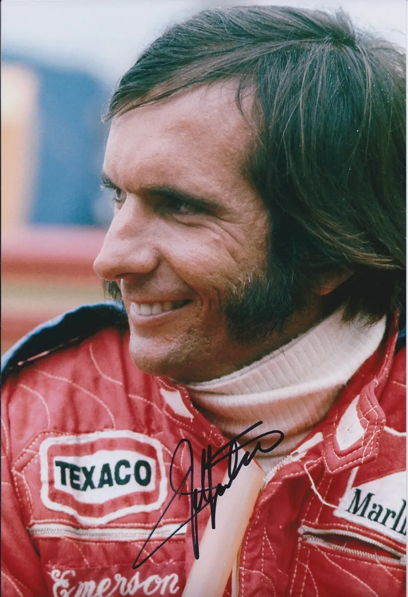
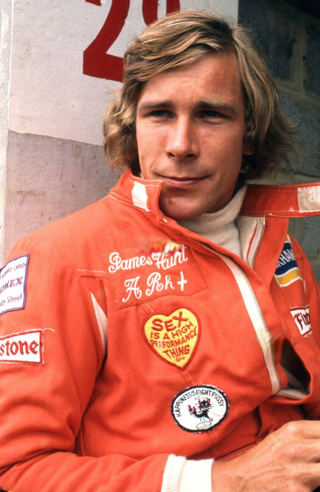
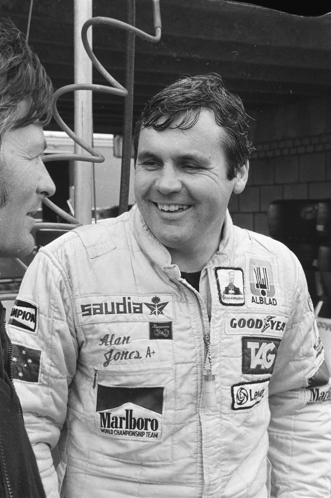
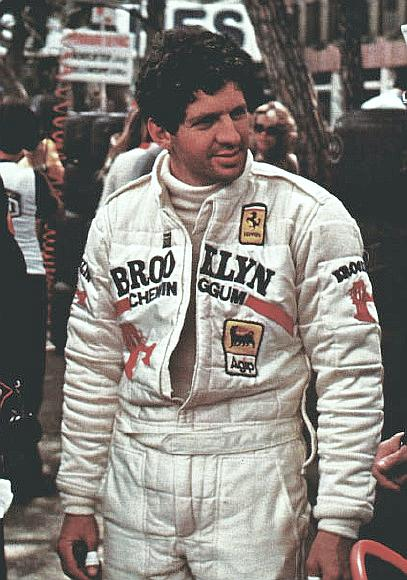
Nel 1979, la nascita della (Fédération Internationale du Sport Automobile) diede il via a una disputa, durata diversi anni, tra quest'ultima (presieduta da Jean-Marie Balestre) e la (Formula One Constructors Association, guidata da Bernie Ecclestone), concernente le questioni tecniche, ma soprattutto il controllo dei diritti televisivi.
Purtroppo, in quegli anni la lista dei decessi fu molto numerosa: Piers Courage, Jo Siffert,
Peter Revson, Jochen Rindt, Helmuth Koinigg, Mark Donohue, François Cévert sono gli altri piloti di
Formula 1 che persero la vita in pista, nel corso della prima metà degli anni Settanta. In seguito, la battaglia
per la sicurezza delle auto e degli autodromi ha dato i suoi frutti, ma nel periodo 1976-1986 si registrarono comunque
altri sei decessi: Tom Pryce, Ronnie Peterson, Patrick Depailler, Gilles Villeneuve, Riccardo Paletti
ed Elio De Angelis.
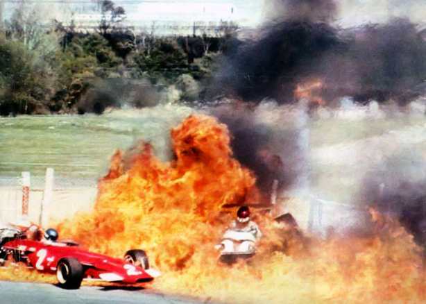
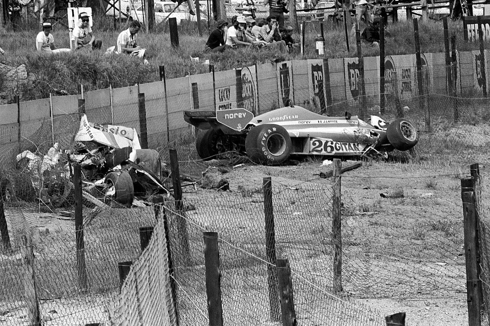
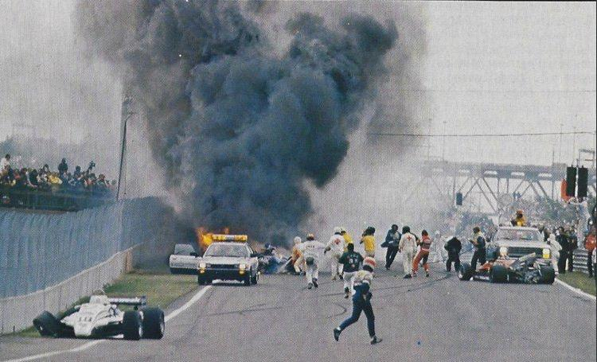
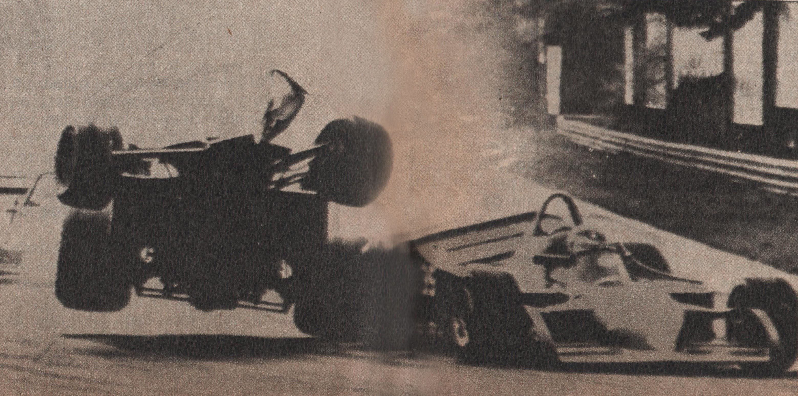
Il 1981 vide la sottoscrizione del cosiddetto
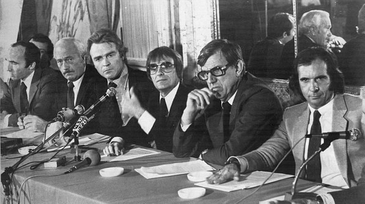
Nel GP del Sudafrica del 1982 si registrò un clamoroso sciopero dei piloti; nel successivo G.P. del Brasile vennero
squalificati Nelson Piquet e Keke Rosberg (giunti rispettivamente primo e secondo), perché le loro vetture risultarono sotto peso.
Ciò generò una clamorosa protesta delle squadre inglesi, che non parteciparono al Gran Premio di San Marino.
A fine anno, la FIA abolì per motivi di sicurezza il cosiddetto effetto suolo aerodinamico dalla stagione 1983
(una tecnologia che, peraltro, non avrebbe avuto alcuna possibilità di sviluppo sulle auto di serie).
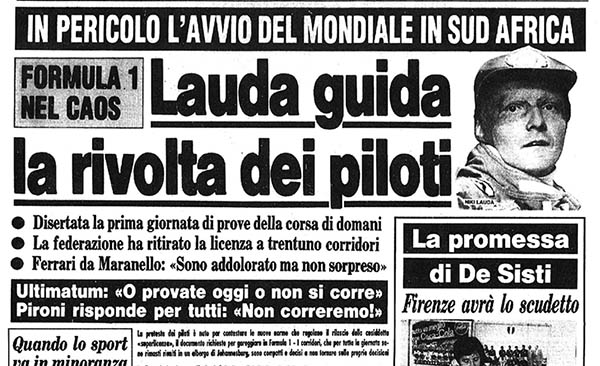
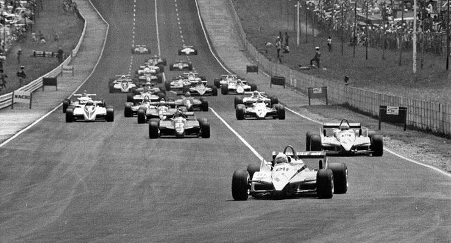
Contemporaneamente, i
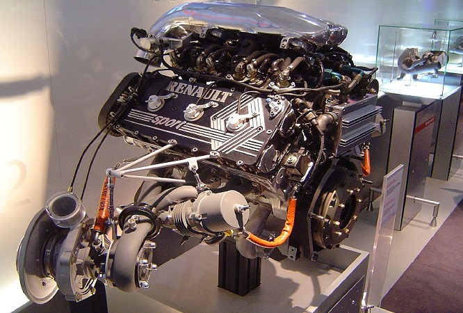
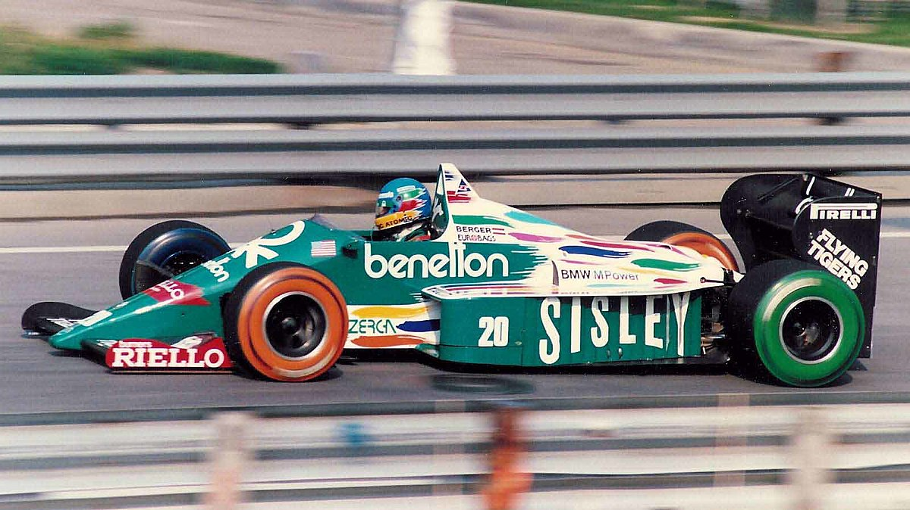
Per contenere l'escalation delle prestazioni, la FIA inserì di volta in volta regole sempre più restrittive per i turbo : per la stagione 1984 vennero vietati i rifornimenti di carburante e la capacità dei serbatoi della benzina fu ridotta a 220 litri; l'anno successivo fu introdotto il divieto di refrigerare il carburante (infatti, 220 litri di benzina congelata corrispondono a più chilogrammi di carburante effettivo imbarcato alla partenza), mentre nel 1986 la capienza dei serbatoi fu diminuita a 195 litri ; nel 1987 la pressione fu limitata a 4 atmosfere , tramite una valvola "pop-off", mentre nel 1988 i serbatoi si ridussero a 150 litri e la pressione fu ulteriormente ridotta a 2,5 atmosfere. Tuttavia, nonostante tali pesanti limitazioni, i motoristi (in particolare la Honda) erano riusciti a ottenere comunque importanti prestazioni (i V6 Honda del 1988 riuscivano a esprimere quasi 700 CV, pur consumando meno di 150 litri); pertanto, la FIA decise di eliminare definitivamente i motori turbo nel 1989.
Ogni circuito dispone di una "pit lane" (o corsia dei box), di solito collocata in corrispondenza del rettilineo principale; collegata a essa vi è il "paddock", cioè la zona ad accesso limitato (i criteri di concessione dei lasciapassare si fecero particolarmente restrittivi nei primi anni 1990, sotto l'egida di Pasquale Lattuneddu, direttore operativo della FOM e "braccio destro" di Bernie Ecclestone) in cui stazionano i camion di trasporto delle auto, i motor-home delle squadre e le officine mobili.
Alcune curve "storiche" sono molto note al grande pubblico, come la variante Ascari e la Parabolica di Monza , la Tosa, il Tamburello
e le Acque Minerali di Imola, la curva del Tabaccaio, la Rascasse e il Tornantino di Monte Carlo,
la Tarzan di Zandvoort o l'Eau Rouge di Spa-Francorchamps. Tra i circuiti più moderni, è considerata molto impegnativa la curva n° 8
di Istanbul Park e la 130R di Suzuka in Giappone. Mentre a Indianapolis la curva n° 13 (l'unica che negli anni 2000 è stata utilizzata dalle Formula 1, tra le 4 che caratterizzano
lo storico circuito "ovale") è risultata molto impegnativa per piloti e pneumatici, in considerazione della Forza G attiva sulle sospensioni.
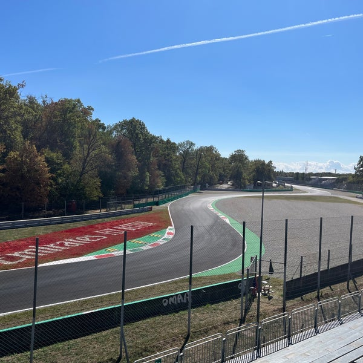
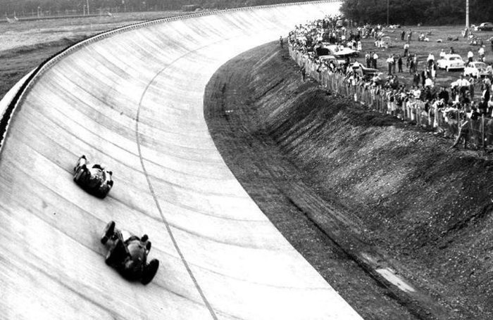